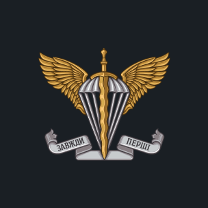
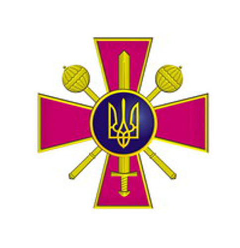
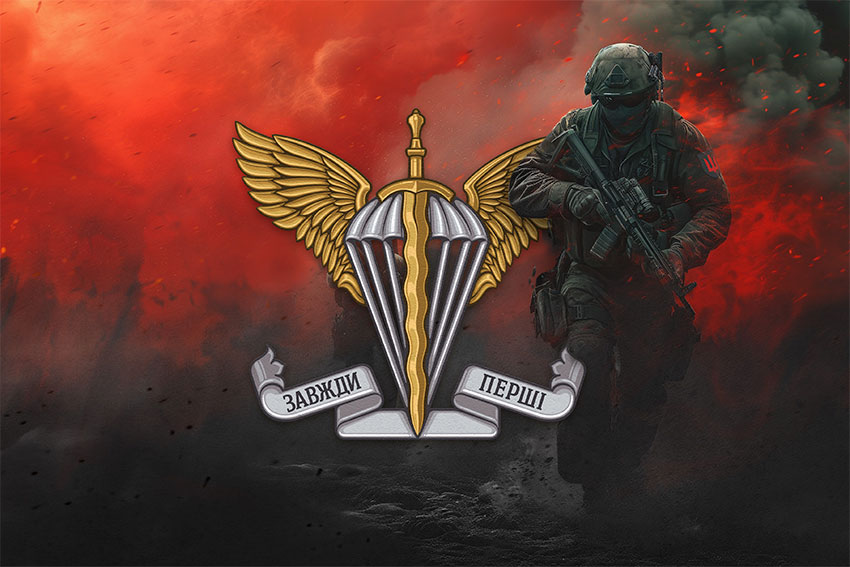
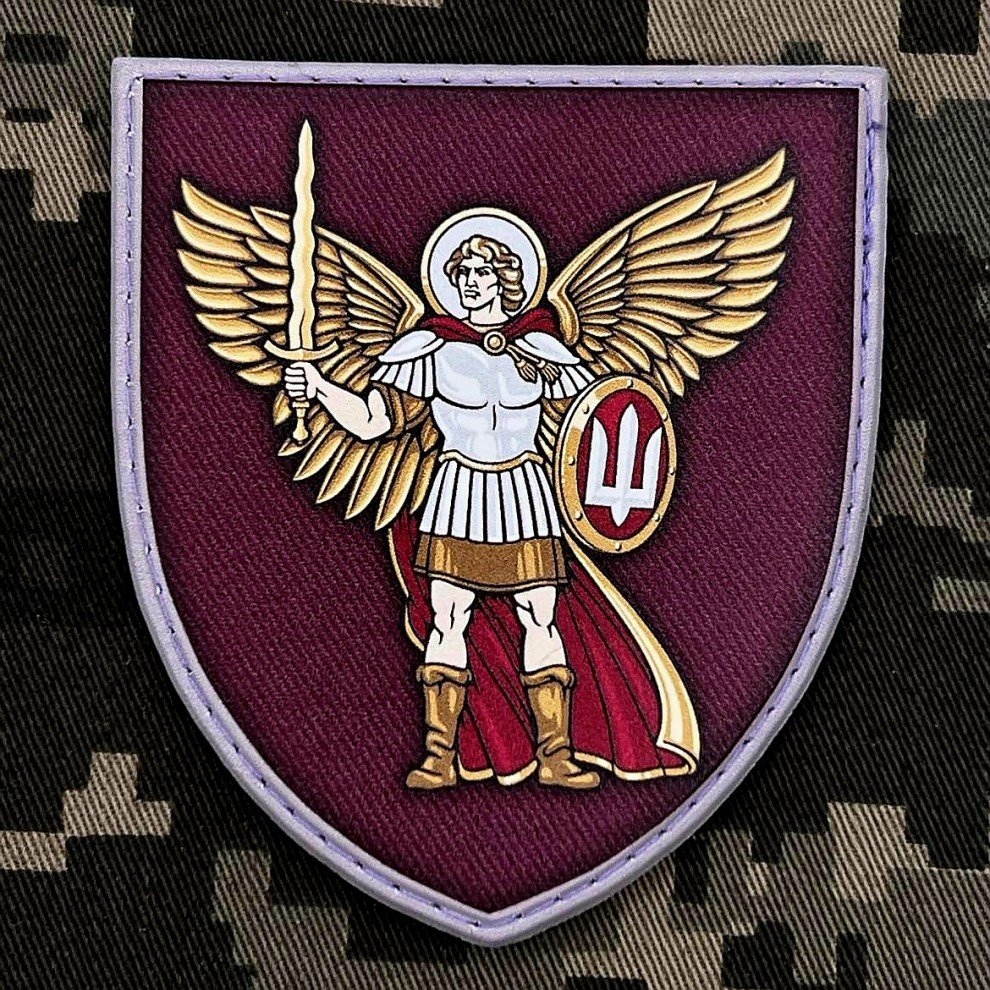
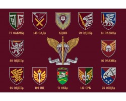

Десантно-штурмові війська Збройних Сил України
 Склад та структура
Десантно-штурмові війська (ДШВ) Збройних Сил України
Окремий рід військ ЗС України, що характеризується високою маневреністю та автономністю дій, призначений для
швидкого розгортання з метою прикриття (оборони) окремих напрямків (районів), ведення наступальних (штурмових)
дій, а також охоплення противника повітрям, ведення бойових дій у його тилу.
Особливостями частин та підрозділів Десантно-штурмових військ Збройних Сил України, що відрізняє їх від
Сухопутних військ є, перш за все, висока мобільність, здатність швидко досягати визначених районів та рубежів,
спроможність самостійно виконувати завдання в складних умовах обстановки, на будь-яких напрямках, високий
рівень підготовки, мотивації та бойового духу.
Організаційно до складу ДШВ ЗС України входять:
- - командування ДШВ ЗС України, як орган військового управління оперативного рівня, що виконує функції генерування, ланування застосування та управління діями військ;
- - бойові з’єднання, військові частини, підрозділи бойового та тилового забезпечення.
За функціональним призначенням бойові з’єднання, військові частини та підрозділи Десантно-штурмових військ розподіляють на десантно-штурмовий та повітрянодесантний компоненти.Десантно-штурмовий компонент — десантно-штурмові та аеромобільні підрозділи, військові частини, з’єднання, які призначені для ведення десантно-штурмових дій.
Повітрянодесантний компонент — парашутно-десантні, десантно-штурмові підрозділи, військові частини, з’єднання та повітрянодесантна військова частина, які призначені для ведення бою, бойових дій різними за складом та характером завдань, що виконуються повітряними десантами.
У складі повітрянодесантної та десантно-штурмових бригад можливо виділити окремо штурмовий компонент, що характеризується поєднанням високої тактичної мобільності та підвищеними (у порівнянні з лінійними підрозділами) вогневими можливостями. Штурмовий компонент складають тактичні групи, створені на основі десантно-штурмових, парашутно-десантних батальйонів (рот), підсилених танковими, артилерійськими, зенітними (зенітно-артилерійськими) підрозділами, а також підрозділами бойового забезпечення та логістики. Найбільш доцільно застосовувати дані тактичні групи для подолання укріплених районів, опорних пунктів противника, знищення (виведення з ладу) його важливих об’єктів, що мають достатнє фортифікаційне обладнання та розвинуту систему охорони і оборони.
День святкування – 21 листопада
Військові частини (підрозділи) забезпечення призначені для:
- - забезпечення функціонування пунктів управління Командування Десантно штурмових військ Збройних Сил України, їх охорони та оборони;
- - забезпечення обміну інформації, розгортання та підтримання у постійній готовності до використання та експлуатації інформаційних систем, засобів інформатизації та автоматизованих систем управління військами;
- - забезпечення військових частин (підрозділів) Десантно штурмових військ повітрянодесантною технікою і майном.
Тернистий шлях становлення
Десантно-штурмові війська ЗС України – окремий рід військ, що відзначається маневреністю та автономністю. Їхнє призначення – швидке розгортання для оборони окремих напрямків, наступальних дій, охоплення противника з повітря і ведення боїв у тилу. Згідно з доктриною, ДШВ виконують завдання на стратегічному, оперативному та тактичному рівнях, діючи у складі об'єднаних сил або самостійно. На тактичному рівні вони ведуть загальновійськовий бій, десантно-штурмові, рейдові, штурмові дії та повітряні десанти.
"Якщо зламаємось - не буде в України десанту!", - "Не зламались, вистояли!"... – Михайло Коваль, 1992 рік
Радянська спадщина та період реформування
Історія українських Десантно-штурмових військ починається у 1992 р., коли після розпаду СРСР, згідно з Постановою Верховної Ради України від 24 серпня 1991 р., всі військові формування на території України перейшли під її юрисдикцію. Перехід повітрянодесантних частин Радянської армії відбувався з труднощами через протидію з боку російського керівництва.
98-му гвардійську повітрянодесантну дивізію, дислоковану в м. Болград, розділили між Україною та Росією в грудні 1993 р. Частина, що залишилася в Україні, стала 1-ю аеромобільною дивізією, яка 1 червня 1993 р. увійшла до Одеського військового округу. 3 травня 1992 р. військовослужбовці 224-го навчального центру в м. Хирів склали присягу на вірність Україні.
Через нестачу спеціалізованого озброєння повітрянодесантні частини України трансформувалися в Аеромобільні війська, залишивши повітрянодесантний компонент у складі 25-ї бригади. У 1992 р. було сформовано 95-й навчальний центр у м. Суми, який у 1993 р. перемістили в Житомир.
Станом на 1993 рік Аеромобільні війська структурно входили до Сухопутних військ ЗС України та складались з одного аеромобільного з’єднання, двох аеромобільних військових частин і двох навчальних центрів
Гартування бойовими діями
Від початку російської агресії десантні війська України активно протидіяли військам агресора та проросійським НЗФ. Саме вони були найбільш підготовленими у ЗСУ. Після анексії Криму десантники відразу залучилися до захисту територій. Розвідувальна рота 25-ї бригади — єдиний підрозділ, що вийшов з Криму з усім озброєнням.
З квітня 2014 року вони брали участь в АТО на сході країни. 79-а бригада прикривала кримський напрямок, а 25-а, 80-а та 95-а першими вступили у бій із гібридними військами рф. Десантники проявляли мужність у боях під Слов'янськом, Савур-Могилою, Луганським та Донецьким аеропортами.
Враховуючи бойовий досвід, у складі десантних військ з’явилися артилерійські групи, танкові роти, та було сформовано 148-й артилерійський дивізіон. У 2015 році командування перемістилося до Житомира, де посилило підготовку й бойові спроможності десантних частин. У 2018 році їх перейменували на Десантно-штурмові війська ЗСУ, які активно брали участь у захисті країни від початку повномасштабного вторгнення у 2022 році.
Під час відсічі широкомасштабної російської агресії
З початком повномасштабного вторгнення 24 лютого 2022 року, частини Десантно-штурмових військ (ДШВ) ЗС України одними з перших вступили в бій по всіх напрямках. Вони брали участь в обороні Миколаєва, на Донбасі, в контрнаступах на Херсонщині та Слобожанщині. Для посилення ДШВ були сформовані нові бригади, батальйони та підрозділи, отримано західну техніку.
Внаслідок змін у бойових умовах підрозділи ДШВ часто діють як механізовані частини, особливо в оборонних та наступальних операціях. З метою вшанування відваги, 21 листопада 2023 року кільком бригадам ДШВ були присвоєні почесні найменування, а низку підрозділів відзначено за мужність.Станом на 2024 рік чисельність ДШВ значно зросла, досягнувши понад тридцяти тисяч осіб.
Завдання з Figma
Maecenas lacinia felis nec placerat sollicitudin. Quisque placerat dolor at scelerisque imperdiet. Phasellus tristique felis dolor.
Maecenas elementum in risus sed condimentum. Duis convallis ante ac tempus maximus. Fusce malesuada sed velit ut dictum. Morbi faucibus vitae orci at euismod. Integer auctor augue in erat vehicula, quis fermentum ex finibus.
Mauris pretium elit a dui pulvinar, in ornare sapien euismod. Nullam interdum nisl ante, id feugiat quam euismod commodo. Sed ultrices lectus ut iaculis rhoncus. Aenean non dignissim justo, at fermentum turpis. Sed molestie, ligula ut molestie ultrices, tellus ligula viverra neque, malesuada consectetur diam sapien volutpat risus. Quisque eget tortor lobortis, facilisis metus eu, elementum est. Nunc sit amet erat quis ex convallis suscipit. ur ridiculus mus.